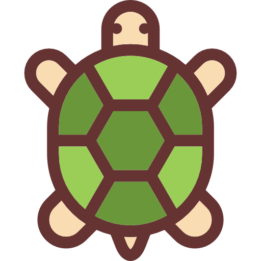
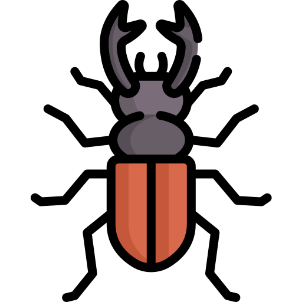
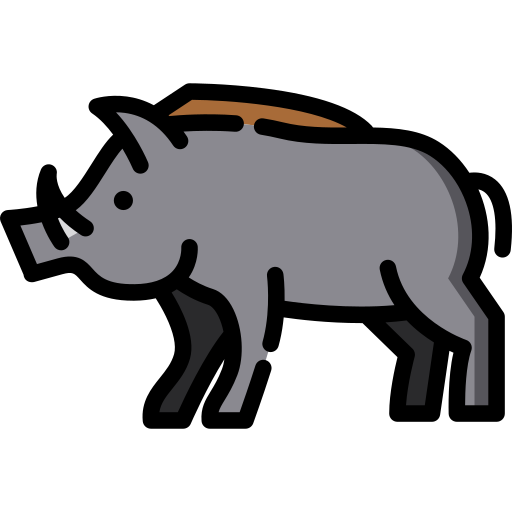
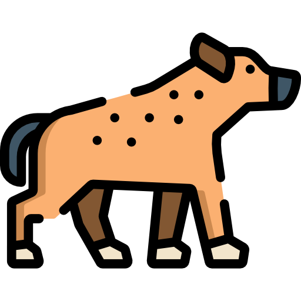
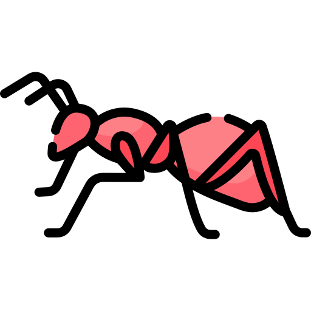

CAUSAM A MORTE DOS PRÓPRIOS INDIVÍDUOS
O ferrão das ABELHAS fica preso à vítima
| O sistema de defesa das abelhas com ferrão ativo torna sua defesa um ato suicida. Quando a abelha ferroa, o ferrão desloca-se do abdômen e, na maioria das vezes, parte dos órgãos internos da abelha ficam na vítima e a abelha morre em seguida. Isto acontece devido a estriações do ferrão que acabam fixando o ferrão no tecido picado. A resposta evolutiva é que aparelho inoculador de veneno (ferrão) das abelhas e de outros indivíduos dessa ordem zoológica foi derivado de um ovopositor modificado, o qual possui glândulas veneníferas anexas. |
JABUTIS podem não conseguir se desvirar
| O casco dos testudines (tartaruga, cágado e jabuti) possui um formato geométrico que complica a vida desses animais; muitas vezes, se virados de costas para baixo, não conseguem se desvirar sozinhos o que acarreta sofrimento, pois devido ao seu grande peso corporal e ausência de esqueleto interno, as vísceras, órgãos e músculos descolam-se para baixo, comprimindo assim o pulmão do animal e causando asfixia, que muitas vezes leva esses indivíduos a óbito, chegando a esse resultado lamentável lentamente, depois de cerca de 20 dias virado. |  |
|---|
Muitos BESOUROS não conseguem se desvirar
|  | Alguns besouros, como o besouro saltador, conseguem saltar e se desvirar, pois entre o tórax e o abdômen possuem uma junta flexível que lhes permite encurvar o corpo, "engatilhando-o" para impulsionar um salto para cima. Porém, alguns grupos de besouros possuem um formato geométrico que complica a vida deles: se virados de costas para baixo, não conseguem se desvirar sozinhos. Nessa posição, os besouros ficam imóveis e tornam-se presas fáceis para pássaros e sapos e, no último caso, chegam ao resultado lamentável do óbito por fome. |
|---|
Dentes do BABIRUSA perfuram próprio crânio
| Os dentes caninos da mandíbula do babirusa macho crescem por sobre a face, e os caninos superiores emergem na vertical dos alvéolos do maxilar e penetram pela pele do nariz, então saem em curva para cima e na frente da face. Os dentes caninos crescem curvados e em direção à cabeça, onde acabam, muitas vezes, perfurando o crânio do animal e atingindo o cérebro. A função atual destes dentes é desconhecida. Eles são bastante frágeis, facilmente se quebram e são raramente usados em combate. Estudos subsequentes do comportamento, da fragilidade estrutural do dente canino superior e a relativa superficialidade destes, mostraram que os dentes caninos do macho adulto nunca foram usados diretamente em lutas. |  |
|---|
Galhada do ALCE IRLANDÊS causou sua extinção
 |
A galhada de muitos animais possui entre uma de suas funções fundamentais um "símbolo visual de posição de domínio". Com 41 kg de chifre que possuía 3,65 metros de ponta a ponta, o Megaloceros (Alce irlandês) rearranjou seus chifres de forma que pudessem ser exibidos por completo quando o animal olhasse pra frente, pois manobrar os chifres como os animais modernos fazem não seria viável. Contudo, embora estivesse bem adaptado às campinas abertas e relvadas, com poucos bosques da época, aparentemente o Megaloceros não se adaptou de forma suficientemente rápida à tundra subártica ou ao denso florestamento ocorrido depois do último recuo da camada de gelo, sendo incapaz de fugir dos predadores pela densa floresta; provavelmente o animal foi vítima do seu sucesso evolutivo anterior. |
|---|
TUBARÕES que não podem parar de nadar
| Existem espécies de tubarões que não podem parar de nadar (como o tubarão-branco e o tubarão-baleia), isso porque eles possuem o que se chama de ventilação forçada obrigatória, ou seja, recebem oxigênio para sobreviver apenas se o seu movimento for permanente. Acontece que os tubarões não possuem o opérculo e, dessa forma, precisam estar em constante movimento para que a água possa passar pela sua boca, atravessar a faringe e chegar às brânquias, ocorrendo as trocas gasosas da respiração branquial. Desse modo, se os tubarões pararem de nadar, o fluxo de água é interrompido e o sangue não receberá oxigênio, matando o animal asfixiado. |  |
|---|
CETÁCEOS podem se asfixiar
 |
Tal como todos os mamíferos, os cetáceos respiram ar por pulmões, o que implica que os animais desse grupo necessitam subir até a superfície para respirar, apesar de seu sistema respiratório permitir-lhes suportar muito tempo sem respirar (o cachalote, por exemplo, pode ficar três horas submerso sem respirar). Como todos os mamíferos, os cetáceos também dormem, mas não podem ficar completamente inconscientes para poderem respirar. Acontece que se não subirem para realizar as trocas gasosas da respiração, o sangue não recebe oxigênio, resultando na sua morte por asfixia. |
|---|
HIENAS dão à luz por um pseudo-pênis
| A Crocuta crocuta fêmea não possui vagina externa (abertura vaginal), pois os lábios são fundidos para formar um pseudo-escroto, enquanto o clítoris é formado e posicionado formando um pseudo-pênis através do qual a fêmea urina, copula, dá à luz e que é capaz de ter ereção. O problema maior é que a hiena precisa dar à luz a um filhote de quase 2 Kg (os filhotes de hiena-pintada são os maiores jovens carnívoros em relação ao peso de suas mães) através de um canal de 2 cm de largura nesse pseudo-pênis. Com isso, cerca de 60% dos filhotes ficam presos e sufocam antes de nascer, outras vezes o filhote morto fica preso e acarreta na morte da mãe. |  |
|---|
FORMIGAS e a espiral da morte
|  | Espiral da morte (ou círculo da morte) e ocorre quando formigas da espécie Labidus coecus, também conhecidas como formigas de correição ou legionárias, acabam ficando desorientadas em seu próprio rastro. Como não enxergam bem, formigas se orientam deixando um trilha de feromônios que servem como guia umas para as outras. O problema acontece quando uma formiga se desorienta e cria uma trilha em formato circular, que é reforçado pelo feromônio das outras formigas. Assim, elas entram num giro desorientado e acabam muitas vezes morrendo de exaustão. |
|---|